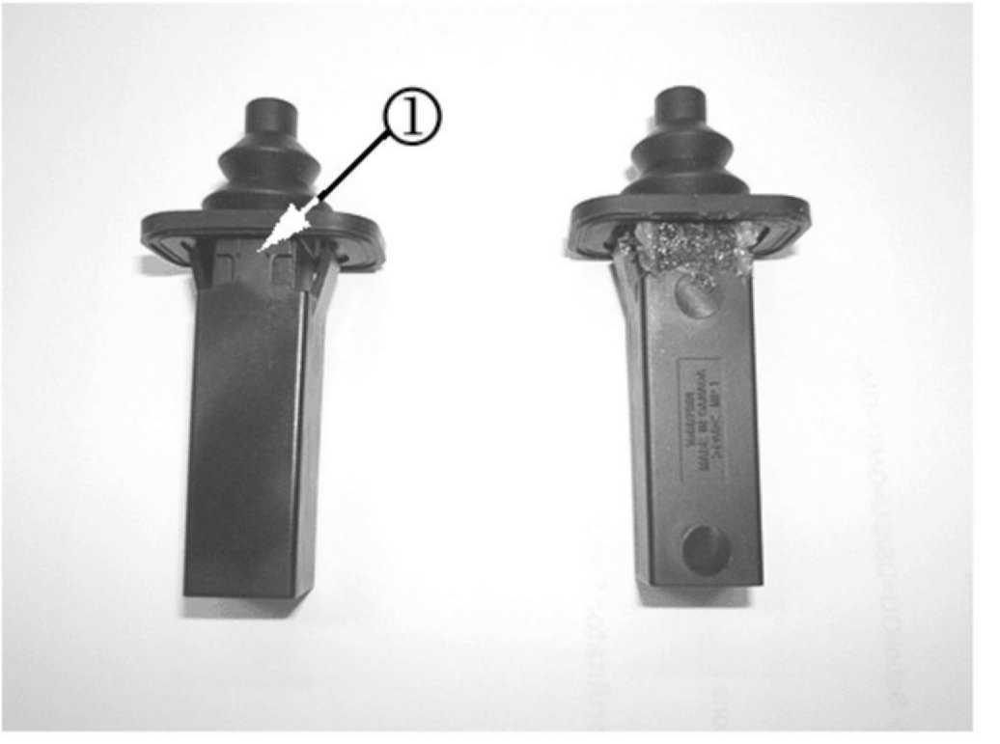

Fuel System/Body - Fuel Filler Door Spring Service
Bulletin No.: 07-08-66-001Date: January 10, 2007
INFORMATION
Subject:
Information on Fuel Filler Door Spring Assembly Replacement
Models:
2006-2007 Buick Lucerne
2004-2007 Cadillac SRX
2005-2007 Cadillac STS
2007 Cadillac DTS, Escalade, Escalade ESV, Escalade EXT
2007 Chevrolet HHR, Suburban, Tahoe
2007 GMC Acadia
2007 Saturn Aura, Outlook
This bulletin is being issued to inform technicians of additional information regarding replacement of the fuel filler door spring.
If the spring is being replaced for breakage and it occurred during cold temperatures, it may be due to water intrusion. Water may enter through the seams in the housing and freeze. If the spring is pushed in to open the fuel door, the force will cause the housing to separate.

A new fuel filler door spring will be available in the near future. In the meantime, to prevent reoccurrence, engineering is recommending that prior to installing a replacement spring, to apply a flexible sealer such as 3M(TM) Clear Auto Sealer P/N 08551, or equivalent, to the voids (1) on both sides of the spring housing as shown in the picture.

Disclaimer